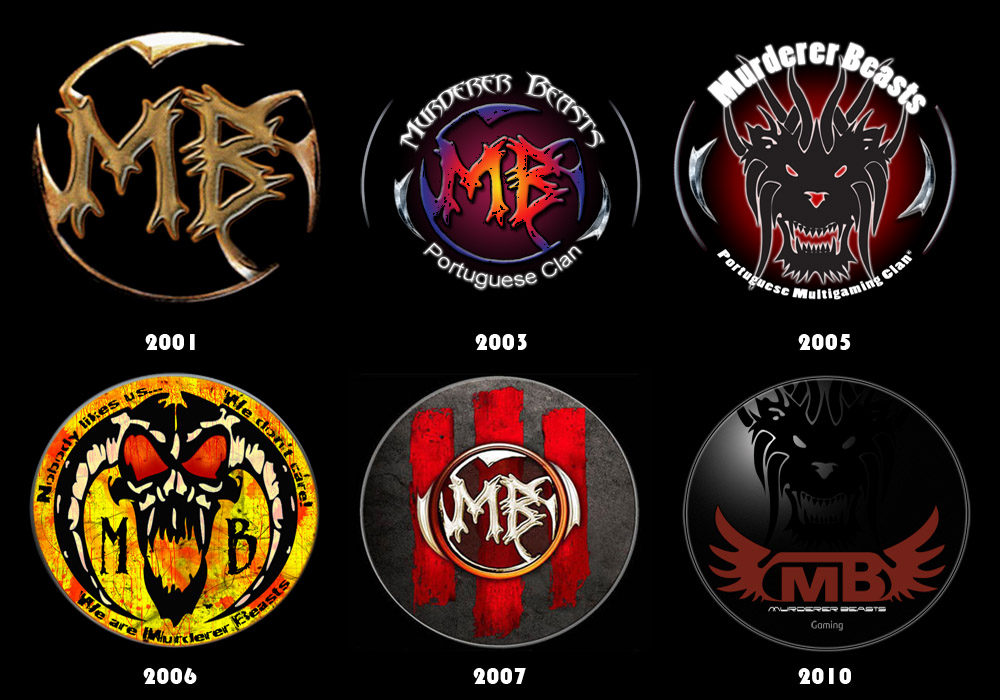

Welcome to Murderer Beasts Gaming Website
We put our old 2010 website back online with the nostalgic intention of reminiscing about the good old times we spent together in the clan.
To navigate without problems in our website please disable the AdBlocks in your browser.
Click on the image to have a nice trip =)